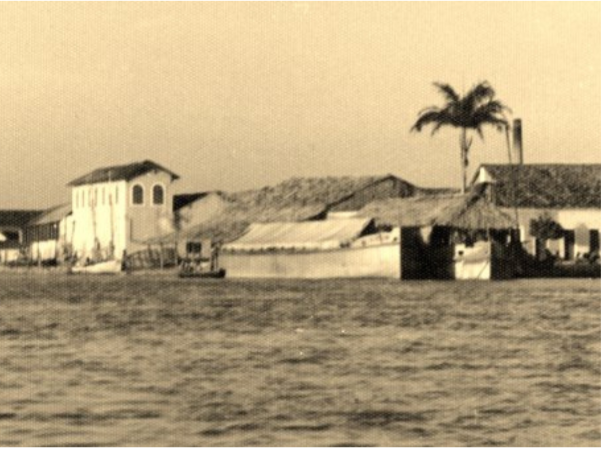

Porto das Barcas
Parnaíba - anos 1940
O Porto das Barcas ocupa um lugar central na memória econômica e cultural de Parnaíba. Durante muitos anos, foi ponto estratégico para o comércio, para o encontro entre diferentes trajetórias e para a circulação de mercadorias ligadas à vida regional.
Nos postais e fotografias antigas, o conjunto revela a relação intensa entre a cidade e as águas. A paisagem portuária guarda marcas de trabalho, deslocamento e convivência, consolidando-se como uma das imagens mais emblemáticas do imaginário parnaibano.
Imagens relacionadas


Antes e Depois
Compare o postal histórico com o registro atual .
